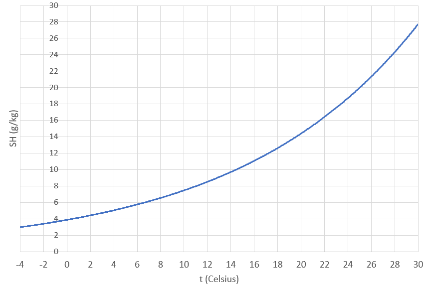

Ilmastointi
Contents
Ilmastointi#
Tarkastellaan tässä ilmanvaihtoa ja ilmastointia lämpöopin näkökulmasta. Pelkkään poistopuhallukseen perustuvaa koneellista ilmanvaihtoa kutsutaan poistoilmanvaihdoksi. Kun järjestelmä sisältää myös tuloilman puhalluksen, puhutaan tulo- ja poistoilmanvaihdosta. Jos tuloilmaa lisäksi kostutetaan tai jäähdytetään, on kyseessä ilmastointi.
Ilman kosteus#
Tässä kappaleessa tarvittavia käsitteitä ovat absoluuttinen kosteus, kyllästyskosteus ja suhteellinen kosteus.
Suure |
Merkitys |
Yksikkö |
Laskukaava |
|---|---|---|---|
Absoluuttinen kosteus, AH (absolute humidity) |
vesihöyryn määrä \(m\) ilmassa tilavuudessa \(V\) |
\(\text{g/m}^3\) tai \(\text{g/kg}\) |
\(AH=\frac{m}{V}\) |
Kyllästyskosteus, SH (saturation humidity) |
maksimimäärä vesihöyryä, jonka ilma voi sisältää tietyssä lämpötilassa |
\(\text{g/m}^3\) tai \(\text{g/kg}\) |
kuvaajasta tai taulukoista |
Suhteellinen kosteus, RH (relative humidity) |
absoluuttisen kosteuden ja kyllästyskosteuden suhde |
prosentti % |
\(RH=\frac{AH}{SH}\) |
Kyllästyskosteus SH riippuu voimakkaasti lämpötilasta. Kuumana kesäpäivänä ilma voi olla kosteaa, mutta yöllä, kun ilma jäähtyy, kosteus tiivistyy pisaroiksi nurmikolle. Lämpötilaa, jossa vesihöyry alkaa tiivistyä vedeksi, kutsutaan kastepisteeksi. Kastepisteessä kyllästyskosteus on sama kuin absoluuttinen kosteus.
Kyllästyskosteudelle on olemassa erilaisia laskukaavoja, joista osassa huomioidaan lämpötilan lisäksi myös ilmanpaine. Riittävällä tarkkuudella arvoja voi lukea seuraavasta kuvaajasta.

Esimerkki
Eräänä päivänä ulkolämpötila on 20 astetta, ja ilman suhteellinen kosteus on 60 %.
a) Kuinka suuri on tuolloin absoluuttinen kosteus?
b) Mikä on kastepiste kyseisenä päivänä?
Ratkaisu
a) Absoluuttinen kosteus saadaan laskemalla \(AH = SH\cdot RH\). Laskuun tarvitaan suhteellinen kosteuden \(RH=0.60\) lisäksi maksimikosteuden arvo SH. Luetaan se kuvaajasta: \(SH = 16~\text{g/kg}\).
Siis \(AH = SH\cdot RH = 16~\text{g/kg}\cdot 0.60 = 9.6~\text{g/kg}\) eli noin \(10~\text{g/kg}\).
b) Kastepiste on se lämpötila, jossa \(10~\text{g/kg}\) on sama kuin kyllästyskosteus SH. Kuvaajan mukaan kastepiste on noin 11 astetta. Jos ilma jäähtyy tuohon lämpötilaan, alkaa kosteutta tiivistyä maahan.
Kyllästyskosteuden kuvaajasta voidaan todeta, että huoneilman lämmityksessä tai jäähdytyksessä on seuraavat ongelmat:
jos ilmaa lämmitetään, niin vaikka ilman absoluuttinen kosteus AH ei muutu, niin suhteellinen kosteus RH laskee
jos ilmaa jäähdytetään, niin vaikka ilman absoluuttinen kosteus AH ei muutu, niin suhteellinen kosteus SH nousee
Tavoiteltava suhteellinen kosteus huoneilmassa on noin 50 %. Ilmastointijärjestelmissä ilmaa pitää siis lämmityksen tai jäähdytyksen lisäksi kosteuttaa tai kuivattaa.
Lämmitys ja kostutus#
Kun ilmaa lämmitetään, ilmastoinnissa on kaksi vaihetta: 1) ilman lämmitys, 2) ilman kostutus.
Lämmitykseen tarvittava teho \(P\) saadaan kaavalla \(Pt=m c_p \Delta T\), missä \(t\) on aika, \(m\) on lämmitettävän ilman massa, \(c_p\) on ilman ominaislämpökapasiteetti vakiopaineessa, ja \(\Delta T\) on ilman lämpötilan muutos.
Ilman kosteutus voi tapahtua lisäämällä ilmaan vesihöyryä. Tähän tarvittava teho on \(Pt=mr\), missä \(r\) on veden höyrystymislämpö. Tehonkulutuksen laskemisessa pitää huomioida molemmat tapahtumat. Tarkastellaan ilmastointilaitteiden toimintaa laskuesimerkkien avulla.
Esimerkki
Yksinkertainen ilmastointilaite ottaa 10-asteista ulkoilmaa 10 kuutiometriä minuutissa ja lämmittää ilman 22 asteeseen. Laske lämmitysteho watteina.
Ratkaisu
Ratkaistaan yhtälöstä \(Pt=m c_p \Delta T\) teho \(P\).
Ilman massa \(m\) saadaan kaavasta \(m=\rho V\), missä \(\rho\) on ilman tiheys ja \(V\) tilavuus. Tiheys riippuu lämpötilasta \(T\) ja sen voi laskea kaavalla
\(\rho=\frac{pM}{RT}\), missä \(p\) on normaali ilmanpaine, \(M\) on ilman moolimassa ja \(R\) on kaasuvakio, eli tiheys on
\(\rho=\frac{101300~\text{P}\cdot 29~\text{g/mol}}{8.31~\text{J/(mol K)} \cdot 283.15~\text{K}} = 1.249~\frac{\text{kg}}{\text{m}^3}\)
ja massaksi saadaan
\(m=1.249~\frac{\text{kg}}{\text{m}^3}\cdot 10~\text{m}^3=12.49~\text{kg}\).
Ilman ominaislämpökapasiteetille vakiopaineessa voidaan käyttää arvoa \(c_p=1004~\text{J/(kg K)}\).
Tehoksi saadaan
\(P=\frac{m c_p \Delta T}{t}=\frac{12.49~\text{kg}\cdot 1004~\frac{\text{J}}{\text{kg K}}\cdot 12~\text{K}}{60~\text{s}}=2508~\text{W}\)
Tehontarve pelkkään ilman lämmitykseen on siis noin 2.5 kW.
Esimerkki
Ilmastointilaitteisto ottaa 10-asteista ulkoilmaa, jonka suhteellinen kosteus on 40 %, tilavuusvirralla 10 kuutiometriä minuutissa. Laite lämmittää ilman 22 asteeseen ja sen jälkeen lisää siihen kuumaa höyryä siten, että suhteellinen kosteus nousee 50 %:iin. Laske
a) nopeus, jolla laite sumuttaa vesihöyryä ilmaan (g/min),
b) laitteen teho.
Ratkaisu
Kyllästyskosteuden kuvaajasta nähdään, että 10 asteessa SH on noin \(9~\text{g/kg}\). Absoluuttinen kosteus on siten $AH=0.40\cdot 9~\text{g/kg} = 3.6~\text{g/kg}.
Huoneilmassa 22 asteen lämpötilassa SH on kuvaajan mukaan noin \(17~\text{g/kg}\). Absoluuttisen kosteuden tulee olla 50 % tästä eli \(8.5~\text{g/kg}\). Vesihöyryä pitää siis lisätä noin \(5~\text{g/kg}\). Aiemmin laskettiin, että yksi kuutiometri ulkoilmaa vastaa 12.5 kg massaa (tilavuushan muuttuu, kun ilmaa lämmitetään, mutta massa pysyy samana). Minuutissa vesihöyryä pitää siis lisätä
\(5~\text{g/kg}^3\cdot 12.5~\text{kg}=62.5~\text{g}\).
b) Lämmitystehon kulutukseksi on laskettu jo aiemmin 2.5 kW.
Höyrystimen tehonkulutus saadaan kaavalla
\(P=\frac{mr}{t}=\frac{0.065~\text{kg}\cdot 2280000~\frac{\text{J}}{\text{kg}}}{60~\text{s}}=2470~\text{W}\)
Ilman kosteuttamiseen kuluu siis suunnilleen 2.5 kW, eli saman verran kuin pelkkään lämmitykseen. Ilmastointilaitteen kokonaisteho on näin ollen noin 5 kW.
Jäähdytys ja kuivaus#
Jos ilmaa viilennetään, niin ilmastoinnin vaiheet ovat: 1) ilman jäähdytys, 2) ilman kuivatus. Tällöin ilmastointilaite toimii täsmälleen samalla tavalla kuin jääkaappi. Höyrystin on sijoitettu rakennuksen sisäpuolelle ja lauhdutin sen ulkopuolelle. Laskukaavat ovat vastaavat kuin lämmityksen ja kosteutuksen tapauksessa.
Esimerkki
Ilmastointilaitteen läpi kulkee 30-asteista huoneilmaa, jonka suhteellinen kosteus on 60 %, tilavuusvirralla 10 kuutiometriä minuutissa. Laite jäähdyttää ilman 14 asteeseen. Laske
a) jäähdytysteho,
b) vesihöyryn tiivistymisnopeus (g/min),
c) laitteen kokonaisteho.
Ratkaisu
a) Lasketaan 10 kuutiometrin tilavuutta 30 asteen lämpötilassa vastaavan ilman massa:
\(\rho=\frac{101300~\text{P}\cdot 29~\text{g/mol}}{8.31~\text{J/(mol K)} \cdot 303.15~\text{K}} = 1.166~\frac{\text{kg}}{\text{m}^3}\)
\(m = \rho V =1.167~\frac{\text{kg}}{\text{m}^3} \cdot 10~\text{m}^3 = 11.66~\text{kg}\)
Ilmaa jäähdytettäessä huoneesta poistettu lämpöteho on
\(P=\frac{m c_p \Delta T}{t}=\frac{11.66~\text{kg}\cdot 1004~\frac{\text{J}}{\text{kg K}}\cdot 16~\text{K}}{60~\text{s}}=3122~\text{W}\)
eli noin 3.2 kW.
b) Lämpimässä huoneilmassa absoluuttinen kosteus on \(0.6\cdot 28~\text{g/kg}=16.8~\text{g/kg}\).
Viilennetyssä ilmassa kyllästyskosteus on kuvaajan mukaan noin \(10~\text{g/kg}\). Ilman jäähtyessä vettä tiivistyy siis noin \(7~\text{g/kg}\). Minuutisssa vettä tiiviistyy siis määrä
\(m=0.007~\frac{\text{g}}{\text{kg}}\cdot 11.77~\text{kg}=0.082~\text{kg}\).
Tiivistymisestä vapautuva lämpöteho on
\(P=\frac{mr}{t}=\frac{0.082~\text{kg}\cdot 2280000~\frac{\text{J}}{\text{kg}}}{60~\text{s}}=3116~\text{W}\)
eli suunnilleen sama kuin lämmitykseen kuluva teho.
c) Laitteen kokonaisteho on jäähdytystehon ja tiivistymislämmön poiston tehojen summa, siis noin 6.4 kW.